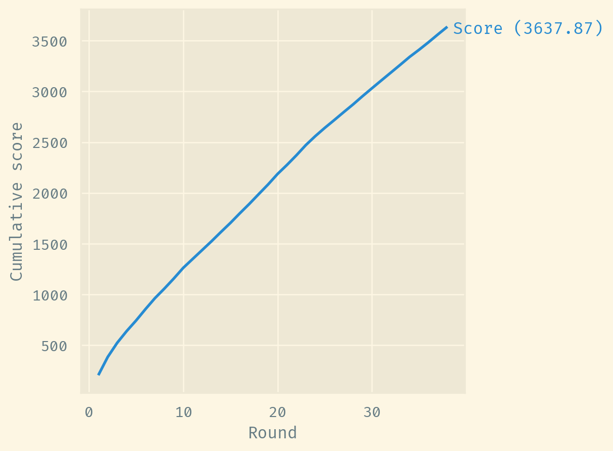
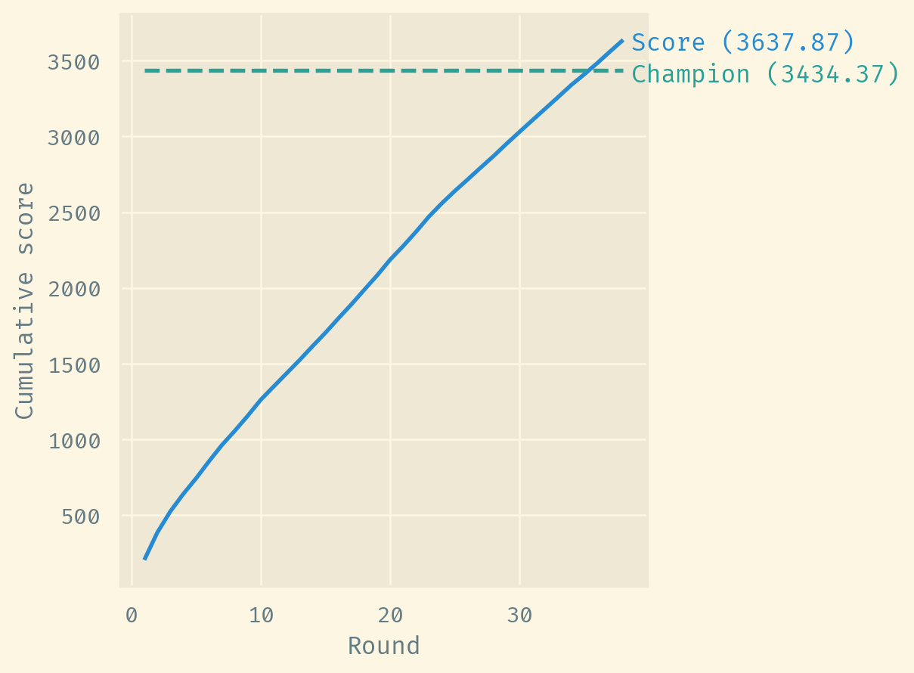
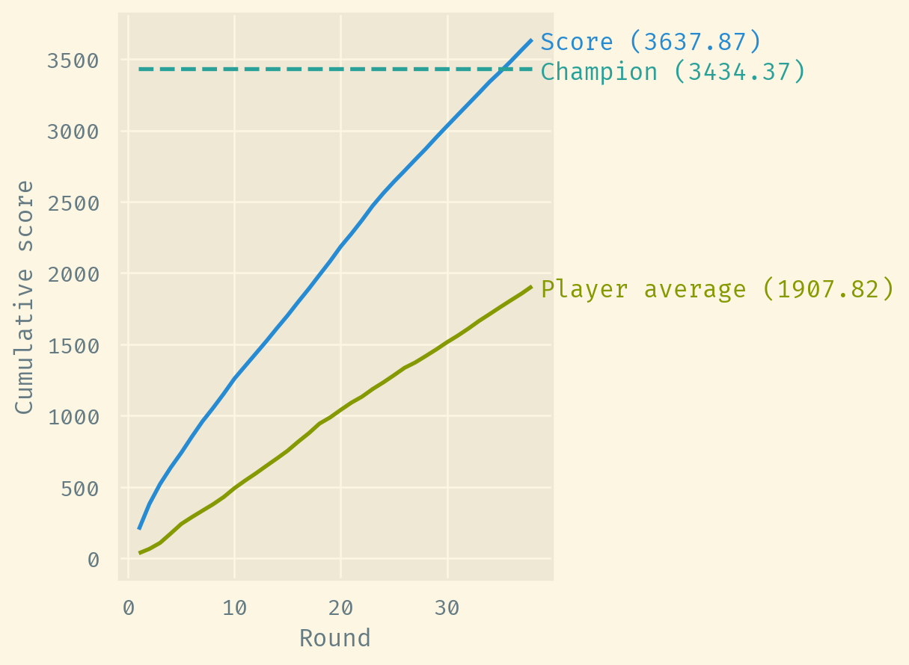

Player( │ round=0, │ player=42234, │ team=264, │ position=1, │ games=0, │ average=0.0, │ value=10.0, │ score=0.0, │ appreciation=0.0, │ minimum=4.53 )
Picking a fantasy football team
football
optimization
prediction
Cartola FC is a fantasy football league following the Brazilian Championship A Series.
Cartola offers a public API to access data for the current round. A couple of years ago, I created a script to automate data retrieval to a repository, which now hosts comprehensive historical data since 2022.
In this post, I will delve into the data for the 2022 season, formulate a mixed integer linear program to pick the optimal team, and present initial concepts for forecasting player scores using mixed effects linear models.
The rules
You begin the season with a budget of C$ 100 (C$ stands for Cartoletas, the game’s paper currency).
Each round is preceded by a market session, where players are assigned a value. You are tasked with forming a team of 11 players plus a coach, all within your budget and adhering to a valid formation. A captain must be chosen from among the players, excluding the coach.
The market is available until the round starts. Players then earn scores based on their real-life match performances. Your team’s score is the aggregate of your players’ scores, with your captain’s score doubled in the 2022 season.
Following the conclusion of the round, player values are recalibrated based on performance -— with increases for scores above their average and decreases for below-average performances. Your budget for the next round is your previous budget, plus the sum of your players’ value variations.
Data wrangling
First, let’s talk about data structures. Each round has a market, and each market is a list of players. A player is a structure like this:
Let’s get the list of markets for 2022 and flatten it into a single DataFrame:
shape: (30_063, 10) ┌───────┬────────┬──────┬──────────┬───┬───────┬───────┬──────────────┬─────────┐ │ round ┆ player ┆ team ┆ position ┆ … ┆ value ┆ score ┆ appreciation ┆ minimum │ │ --- ┆ --- ┆ --- ┆ --- ┆ ┆ --- ┆ --- ┆ --- ┆ --- │ │ i64 ┆ i64 ┆ i64 ┆ i64 ┆ ┆ f64 ┆ f64 ┆ f64 ┆ f64 │ ╞═══════╪════════╪══════╪══════════╪═══╪═══════╪═══════╪══════════════╪═════════╡ │ 1 ┆ 37424 ┆ 1371 ┆ 6 ┆ … ┆ 3.0 ┆ 0.0 ┆ 0.0 ┆ 0.0 │ │ 1 ┆ 37646 ┆ 314 ┆ 3 ┆ … ┆ 5.0 ┆ 0.0 ┆ 0.0 ┆ 2.3 │ │ 1 ┆ 37656 ┆ 266 ┆ 1 ┆ … ┆ 9.0 ┆ 0.0 ┆ 0.0 ┆ 4.08 │ │ 1 ┆ 37788 ┆ 356 ┆ 1 ┆ … ┆ 4.0 ┆ 0.0 ┆ 0.0 ┆ 1.85 │ │ … ┆ … ┆ … ┆ … ┆ … ┆ … ┆ … ┆ … ┆ … │ │ 38 ┆ 121397 ┆ 286 ┆ 2 ┆ … ┆ 1.0 ┆ 0.0 ┆ 0.0 ┆ 0.0 │ │ 38 ┆ 121398 ┆ 354 ┆ 4 ┆ … ┆ 1.0 ┆ 0.0 ┆ 0.0 ┆ 0.0 │ │ 38 ┆ 121399 ┆ 354 ┆ 4 ┆ … ┆ 1.0 ┆ 0.0 ┆ 0.0 ┆ 0.0 │ │ 38 ┆ 121400 ┆ 354 ┆ 5 ┆ … ┆ 1.0 ┆ 0.0 ┆ 0.0 ┆ 0.0 │ └───────┴────────┴──────┴──────────┴───┴───────┴───────┴──────────────┴─────────┘
Now, let’s focus on a specific player to illustrate our data while we wrangle it:
shape: (38, 10) ┌───────┬────────┬──────┬──────────┬───┬───────┬───────┬──────────────┬─────────┐ │ round ┆ player ┆ team ┆ position ┆ … ┆ value ┆ score ┆ appreciation ┆ minimum │ │ --- ┆ --- ┆ --- ┆ --- ┆ ┆ --- ┆ --- ┆ --- ┆ --- │ │ i64 ┆ i64 ┆ i64 ┆ i64 ┆ ┆ f64 ┆ f64 ┆ f64 ┆ f64 │ ╞═══════╪════════╪══════╪══════════╪═══╪═══════╪═══════╪══════════════╪═════════╡ │ 1 ┆ 42234 ┆ 264 ┆ 1 ┆ … ┆ 10.0 ┆ 0.0 ┆ 0.0 ┆ 4.53 │ │ 2 ┆ 42234 ┆ 264 ┆ 1 ┆ … ┆ 7.93 ┆ 2.0 ┆ -2.07 ┆ 5.52 │ │ 3 ┆ 42234 ┆ 264 ┆ 1 ┆ … ┆ 10.44 ┆ 11.0 ┆ 2.51 ┆ 4.75 │ │ 4 ┆ 42234 ┆ 264 ┆ 1 ┆ … ┆ 10.44 ┆ 0.0 ┆ 0.0 ┆ 5.78 │ │ … ┆ … ┆ … ┆ … ┆ … ┆ … ┆ … ┆ … ┆ … │ │ 35 ┆ 42234 ┆ 264 ┆ 1 ┆ … ┆ 11.48 ┆ 0.0 ┆ -0.71 ┆ 3.55 │ │ 36 ┆ 42234 ┆ 264 ┆ 1 ┆ … ┆ 11.51 ┆ 0.0 ┆ 0.03 ┆ 3.63 │ │ 37 ┆ 42234 ┆ 264 ┆ 1 ┆ … ┆ 12.68 ┆ 0.0 ┆ 1.17 ┆ 9.29 │ │ 38 ┆ 42234 ┆ 264 ┆ 1 ┆ … ┆ 11.06 ┆ 0.0 ┆ -1.62 ┆ 1.37 │ └───────┴────────┴──────┴──────────┴───┴───────┴───────┴──────────────┴─────────┘
Filtering participation
Players will show up in the market for many rounds that they do not participate in. However, for our analysis, we are only interested in players that actually played a game in the round.
Each player has a status field that is supposed to indicate whether they will participate in the round. However, I’ve noticed this field is often inacurate, probably because the API data for this field is updated before the round is.
One solution is to keep only rows where there is an increase in the number of games the player has played:
shape: (31, 3) ┌────────┬───────┬───────┐ │ player ┆ round ┆ games │ │ --- ┆ --- ┆ --- │ │ i64 ┆ i64 ┆ i64 │ ╞════════╪═══════╪═══════╡ │ 42234 ┆ 1 ┆ 0 │ │ 42234 ┆ 2 ┆ 1 │ │ 42234 ┆ 3 ┆ 2 │ │ 42234 ┆ 5 ┆ 3 │ │ … ┆ … ┆ … │ │ 42234 ┆ 35 ┆ 27 │ │ 42234 ┆ 36 ┆ 28 │ │ 42234 ┆ 37 ┆ 29 │ │ 42234 ┆ 38 ┆ 30 │ └────────┴───────┴───────┘
Imputing scores
Another field that is inacurate is the player score, probably for the same reason as their status. Fortunately, the average field is accurate, and we can use it to recover the score. Let \(\mathbf{s}\) be the vector of scores for a given player across all rounds:
\[ \begin{align*} \mathrm{Average}(\mathbf{s}_{1:t}) = \frac{\mathrm{Average}(\mathbf{s}_{1:(t-1)}) + s_t}{2} \\ s_t = 2\mathrm{Average}(\mathbf{s}_{1:t}) - \mathrm{Average}(\mathbf{s}_{1:(t-1)}) \end{align*} \]
shape: (31, 4) ┌────────┬───────┬───────┬─────────┐ │ player ┆ round ┆ score ┆ average │ │ --- ┆ --- ┆ --- ┆ --- │ │ i64 ┆ i64 ┆ f64 ┆ f64 │ ╞════════╪═══════╪═══════╪═════════╡ │ 42234 ┆ 1 ┆ 2.0 ┆ 2.0 │ │ 42234 ┆ 2 ┆ 11.0 ┆ 6.5 │ │ 42234 ┆ 3 ┆ 9.5 ┆ 8.0 │ │ 42234 ┆ 5 ┆ 8.6 ┆ 8.3 │ │ … ┆ … ┆ … ┆ … │ │ 42234 ┆ 35 ┆ 4.73 ┆ 4.82 │ │ 42234 ┆ 36 ┆ 5.1 ┆ 4.96 │ │ 42234 ┆ 37 ┆ 4.62 ┆ 4.79 │ │ 42234 ┆ 38 ┆ 4.79 ┆ 4.79 │ └────────┴───────┴───────┴─────────┘
Adding fixtures
Let’s fetch the list of fixtures to enrich our dataset. A fixture is an object like:
Fixture(round=1, home=282, away=285)
Let’s flatten these fixtures into a single DataFrame and pivot it into a long format:
shape: (760, 4) ┌───────┬──────┬────────┬──────┐ │ round ┆ team ┆ versus ┆ home │ │ --- ┆ --- ┆ --- ┆ --- │ │ i64 ┆ i64 ┆ i64 ┆ i32 │ ╞═══════╪══════╪════════╪══════╡ │ 1 ┆ 282 ┆ 285 ┆ 1 │ │ 1 ┆ 266 ┆ 277 ┆ 1 │ │ 1 ┆ 276 ┆ 293 ┆ 1 │ │ 1 ┆ 373 ┆ 262 ┆ 1 │ │ … ┆ … ┆ … ┆ … │ │ 38 ┆ 286 ┆ 354 ┆ 0 │ │ 38 ┆ 276 ┆ 290 ┆ 0 │ │ 38 ┆ 294 ┆ 1371 ┆ 0 │ │ 38 ┆ 263 ┆ 293 ┆ 0 │ └───────┴──────┴────────┴──────┘
Finally, let’s join it to our dataset:
shape: (31, 5) ┌────────┬───────┬──────┬────────┬──────┐ │ player ┆ round ┆ team ┆ versus ┆ home │ │ --- ┆ --- ┆ --- ┆ --- ┆ --- │ │ i64 ┆ i64 ┆ i64 ┆ i64 ┆ i32 │ ╞════════╪═══════╪══════╪════════╪══════╡ │ 42234 ┆ 1 ┆ 264 ┆ 263 ┆ 0 │ │ 42234 ┆ 2 ┆ 264 ┆ 314 ┆ 1 │ │ 42234 ┆ 3 ┆ 264 ┆ 275 ┆ 0 │ │ 42234 ┆ 5 ┆ 264 ┆ 280 ┆ 0 │ │ … ┆ … ┆ … ┆ … ┆ … │ │ 42234 ┆ 35 ┆ 264 ┆ 262 ┆ 0 │ │ 42234 ┆ 36 ┆ 264 ┆ 354 ┆ 1 │ │ 42234 ┆ 37 ┆ 264 ┆ 294 ┆ 0 │ │ 42234 ┆ 38 ┆ 264 ┆ 282 ┆ 1 │ └────────┴───────┴──────┴────────┴──────┘
Aligning variables
For the rest of our analysis, the average field should not include the score in the given round. Also, the appreciation field should be relative to the score in the given round.
shape: (31, 6) ┌────────┬───────┬─────────┬───────┬───────┬──────────────┐ │ player ┆ round ┆ average ┆ value ┆ score ┆ appreciation │ │ --- ┆ --- ┆ --- ┆ --- ┆ --- ┆ --- │ │ i64 ┆ i64 ┆ f64 ┆ f64 ┆ f64 ┆ f64 │ ╞════════╪═══════╪═════════╪═══════╪═══════╪══════════════╡ │ 42234 ┆ 1 ┆ 0.0 ┆ 10.0 ┆ 2.0 ┆ -2.07 │ │ 42234 ┆ 2 ┆ 2.0 ┆ 7.93 ┆ 11.0 ┆ 2.51 │ │ 42234 ┆ 3 ┆ 6.5 ┆ 10.44 ┆ 9.5 ┆ 1.25 │ │ 42234 ┆ 5 ┆ 8.0 ┆ 11.69 ┆ 8.6 ┆ 0.73 │ │ … ┆ … ┆ … ┆ … ┆ … ┆ … │ │ 42234 ┆ 35 ┆ 4.91 ┆ 11.48 ┆ 4.73 ┆ 0.03 │ │ 42234 ┆ 36 ┆ 4.82 ┆ 11.51 ┆ 5.1 ┆ 1.17 │ │ 42234 ┆ 37 ┆ 4.96 ┆ 12.68 ┆ 4.62 ┆ -1.62 │ │ 42234 ┆ 38 ┆ 4.79 ┆ 11.06 ┆ 4.79 ┆ 0.0 │ └────────┴───────┴─────────┴───────┴───────┴──────────────┘
Team picking
Problem
How to pick the best team in a given market? Let \(\mathcal{F}\) be the set of valid formations, for each formation \(f \in \mathcal{F}\), solve:
\[ \begin{equation*} \begin{array}{ll@{}ll} \text{maximize} & \displaystyle \hat{\mathbf{s}}^T \mathbf{x}, & \mathbf{x} \in \{\mathbf{0}, \mathbf{1}\} \\ \text{subject to} & \displaystyle \mathbf{v}^T \mathbf{x} \leq b \\ & \displaystyle \mathbf{P}^T \mathbf{x} = f, \\ \end{array} \end{equation*} \]
where
\(\mathbf{x}\) is a variable vector of player picks in the market;
\(\hat{\mathbf{s}}\) is the vector of predicted player scores in the market;
\(b\) is your available budget for that round;
\(\mathbf{P}\) is the matrix of dummy-encoded player formations in the market.
Finally, take the solution with the highest objective.
class Problem(BaseModel):
scores: List[float]
values: List[float]
budget: float
positions: List[List[int]]
formations: List[Formation]
def solve(self) -> List[pulp.LpSolution]:
formations = [list(f.model_dump().values()) for f in self.formations]
problems = [self.construct(f) for f in formations]
[p.solve(pulp.COIN(msg=False)) for p in problems]
objectives = [p.objective.value() for p in problems]
best = np.argmax(np.array(objectives))
solution = problems[best]
variables = [v.value() for v in solution.variables()]
picks = np.array(variables)
return picks
def construct(self, formation: List[int]) -> pulp.LpProblem:
n = len(self.scores)
m = len(formation)
problem = pulp.LpProblem("team_picking", pulp.LpMaximize)
indexes = ["pick_" + str(i).zfill(len(str(n))) for i in range(n)]
picks = [pulp.LpVariable(i, cat=pulp.const.LpBinary) for i in indexes]
problem += pulp.lpDot(picks, self.scores)
problem += pulp.lpDot(picks, self.values) <= self.budget
for i in range(m):
problem += pulp.lpDot(picks, self.positions[i]) == formation[i]
return problemBacktesting
By solving the team picking problem for all rounds, we can backtest our performance in the season. Before backtesting, let’s get the set of valid formations \(\mathcal{F}\):
[ │ Formation(goalkeeper=1, defender=3, winger=0, midfielder=4, forward=3, coach=1), │ Formation(goalkeeper=1, defender=3, winger=0, midfielder=5, forward=2, coach=1), │ Formation(goalkeeper=1, defender=2, winger=2, midfielder=3, forward=3, coach=1), │ Formation(goalkeeper=1, defender=2, winger=2, midfielder=4, forward=2, coach=1), │ Formation(goalkeeper=1, defender=2, winger=2, midfielder=5, forward=1, coach=1), │ Formation(goalkeeper=1, defender=3, winger=2, midfielder=3, forward=2, coach=1), │ Formation(goalkeeper=1, defender=3, winger=2, midfielder=4, forward=1, coach=1) ]
Now that we know what our formation constraints, we’re ready to backtest. Starting with a budget of C$ 100, for each round let’s:
- Predict each player’s score based on their performance on previous rounds;
- Pick the team with the best total score;
- Add the sum of the team player’s appreciation to our budget.
def backtest(
players: pl.DataFrame, predict: Callable, initial_budget: float = 100.0
) -> pl.DataFrame:
rounds = players.get_column("round").max()
budget = [None] * rounds
teams = [None] * rounds
budget[0] = initial_budget
for round in range(rounds):
if round > 0:
budget[round] = budget[round - 1] + appreciation
data = players.filter(pl.col("round") < round + 1)
candidates = players.filter(pl.col("round") == round + 1)
candidates = predict(data, candidates)
problem = Problem(
scores=candidates.get_column("prediction"),
values=candidates.get_column("value"),
positions=candidates.get_column("position").to_dummies(),
budget=budget[round],
formations=formations,
)
picks = problem.solve()
team = candidates.filter(picks == 1)
teams[round] = team
appreciation = team.get_column("appreciation").sum()
teams = pl.concat(teams)
return teamsBefore diving into predictions, let’s start with a couple of hypothetical backtests, using the actual observed scores to pick our teams. Backtesting this strategy, the first team we pick is:
shape: (12, 13) ┌───────┬────────┬──────┬──────────┬───┬─────────┬────────┬──────┬────────────┐ │ round ┆ player ┆ team ┆ position ┆ … ┆ minimum ┆ versus ┆ home ┆ prediction │ │ --- ┆ --- ┆ --- ┆ --- ┆ ┆ --- ┆ --- ┆ --- ┆ --- │ │ i64 ┆ i64 ┆ i64 ┆ i64 ┆ ┆ f64 ┆ i64 ┆ i32 ┆ f64 │ ╞═══════╪════════╪══════╪══════════╪═══╪═════════╪════════╪══════╪════════════╡ │ 1 ┆ 71571 ┆ 356 ┆ 1 ┆ … ┆ 3.19 ┆ 1371 ┆ 1 ┆ 11.0 │ │ 1 ┆ 42145 ┆ 294 ┆ 2 ┆ … ┆ 2.75 ┆ 290 ┆ 1 ┆ 15.8 │ │ 1 ┆ 105584 ┆ 264 ┆ 2 ┆ … ┆ 2.75 ┆ 263 ┆ 0 ┆ 10.5 │ │ 1 ┆ 107110 ┆ 280 ┆ 3 ┆ … ┆ 2.3 ┆ 286 ┆ 0 ┆ 14.9 │ │ … ┆ … ┆ … ┆ … ┆ … ┆ … ┆ … ┆ … ┆ … │ │ 1 ┆ 39148 ┆ 282 ┆ 5 ┆ … ┆ 7.2 ┆ 285 ┆ 1 ┆ 18.9 │ │ 1 ┆ 89840 ┆ 276 ┆ 5 ┆ … ┆ 5.42 ┆ 293 ┆ 1 ┆ 27.1 │ │ 1 ┆ 104530 ┆ 294 ┆ 5 ┆ … ┆ 2.3 ┆ 290 ┆ 1 ┆ 11.0 │ │ 1 ┆ 97341 ┆ 276 ┆ 6 ┆ … ┆ 0.0 ┆ 293 ┆ 1 ┆ 9.52 │ └───────┴────────┴──────┴──────────┴───┴─────────┴────────┴──────┴────────────┘
And we can plot out cumulative performance during the season:

This might seem like a perfect campaign at first, but it’s possible that, early in the season, we didn’t have enough budget to pick the best scoring teams. To test this hypothesis, we backtest the same strategy with unlimited budget from the start:

Both runs are nearly identical, which is evidence that focusing on appreciation is not so important if we have accurate predictions for the scores. If we predict scores perfectly, we get a near perfect run.
To put our backtests into perspective, the 2022 season champion had a total score of 3434.37. This is very impressive and not very far from the near perfect run.

Score prediction
For each round, we must predict \(\hat{s}\), the vector of score predictions. To estimate the model parameters, we use the data from previous rounds.
However, during the first round, we don’t have any previous data to train our model. In this case, we need to include prior information. One way to do that would be to use data from previous seasons. However, we know a variable where this information is already encoded: the player value. Each season starts with players valued according to their past performance. Knowing this, all our models start with \(\hat{s} = v\) in the first round.
Let’s use Bambi (Capretto et al. 2022) and its default priors to fit our models, let’s not delve into convergence diagnostics, since we are more interested in the average of the predictive posteriors and the backtest itself is measure of the prediction quality.
One question that arises here is: why not use non-parametric models such as gradient boosted trees or neural nets? After some experimentation, I concluded they are not a good fit for this problem: either because they assume independence between observations, or because they are too data hungry. Also, tuning these models for backtests might lead us into a rabbit hole (Bailey et al. 2013).
Player average
\[ \begin{align*} \mathbf{\hat{s}} = \mathbf{Z} \mathbf{\beta} \\ \mathbf{s} \sim N(\mathbf{\hat{s}}, \sigma), \end{align*} \]
where
\(\mathbf{Z}\) is a dummy-encoded matrix of players;
\(\mathbf{\beta}\) is a vector of parameters for each player.
In this model, \(\mathbf{\beta}\) is simply a vector of player averages. Let’s also consider that players that show up in the middle of the season have an average of zero before their first round. This will be our baseline model.

Player random effects
\[ \begin{align*} \mathbf{\hat{s}} = \alpha + \mathbf{Z} \mathbf{b} \\ \mathbf{b} \sim N(0, \sigma_b), \end{align*} \]
where
\(\alpha\) is an intercept and
\(\mathbf{b}\) is a vector of random effects for each player.
This model performs significantly better than the average model, possibly because of the partial pooling between the random effects, that pulls large effects towards the overall mean (Clark 2019). In our dataset, it’s common for players that played one or two games to have large averages by chance.
Fixture mixed effects
\[ \mathbf{\hat{s}} = \alpha + \mathbf{X} \mathbf{\beta} + \mathbf{Z} \mathbf{b}, \]
where
\(\mathbf{X}\) is a matrix of the dummy-encoded versus team and home variables;
\(\mathbf{\beta}\) is a vector of fixed effects.
This brings more context to our predictions. It also provides a reasonable way to predict a new player, by setting their \(b = 0\) (the mean of the random effects).
Further ideas
We developed a comprehensive framing for the fantasy football team picking problem, but it wasn’t enough to win the 2022 Cartola season. I have some other ideas for this, such as:
- enriching our data with player scouts and including them in our model;
- incoporating prior information via priors;
- testing strategies that balance score and appreciation,
but I won’t pursue them for now.
I suppose expert human players have a certain edge over statistical models in fantasy leagues, due to the fact that there are all sorts of relevant data that are not quantified in public datasets.
To be fair, I’m sure that’s not true for all sports everywhere, but it seems to be the case for brazilian soccer. No wonder it’s often refered to as a “little box full of surprises”.
References
Bailey, David H., Jonathan M. Borwein, Marcos Lopez de Prado, and Qiji Jim Zhu. 2013. “The Probability of Back-Test over-Fitting.” SSRN Electronic Journal. https://doi.org/10.2139/ssrn.2326253.
Capretto, Tomás, Camen Piho, Ravin Kumar, Jacob Westfall, Tal Yarkoni, and Osvaldo A Martin. 2022. “Bambi: A Simple Interface for Fitting Bayesian Linear Models in Python.” Journal of Statistical Software 103 (15): 1–29. https://doi.org/10.18637/jss.v103.i15.
Clark, Michael. 2019. “Michael Clark: Shrinkage in Mixed Effects Models.” https://m-clark.github.io/posts/2019-05-14-shrinkage-in-mixed-models/.
Citation
BibTeX citation:
@online{assunção2023,
author = {Assunção, Luís},
title = {Picking a Fantasy Football Team},
pages = {undefined},
date = {2023-09-21},
url = {https://assuncaolfi.github.io/blog/fantasy-football},
langid = {en}
}
For attribution, please cite this work as:
Assunção, Luís. 2023. “Picking a Fantasy Football Team.”
September 21, 2023. https://assuncaolfi.github.io/blog/fantasy-football.